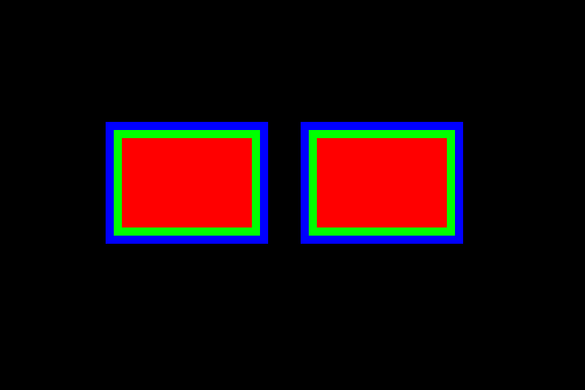

DVD with Intro and Main Menu¶
This topic describes how you can use DVDBuilder to create a DVD that first plays an intro video title, then presents a menu with two different video titles.
Project Directory¶
You need a directory to store the source images and the DVDBuilder project. This can be anywhere on your machine. For example create C:\TitleMenuDVD directory. We will refer to that as the DVD Project Directory.
Assets¶
Video Clips¶
Download the files Wildlife_512kb.mp4 from the Internet Archive to the DVD Project Directory.
Download the files Elephant_512kb.mp4 and Hippo_512kb.mp4 from the Internet Archive to the DVD Project Directory.
Menu Background and Mask¶
Download the Text_Menu_NTSC.jpg and the Text_Menu_NTSC_Mask.bmp images below to the DVD Project Directory.



See Create Text-only Menu Background and Mask in GIMP for the steps to create the background and mask images.
DVDBuilder Project¶
In the DVD Project Directory create a file project.xml with the following contents:
<?xml version='1.0' encoding='utf-8'?>
<dvd version='2.3' xmlns='http://www.primosoftware.com/dvdbuilder/2.3'>
<videoManager firstPlayNavigate='Title=1;'>
<menus>
<!-- Main Menu -->
<menu id='1001' entry='title'>
<background file='Text_Menu_NTSC.mpg' />
<button left='120' top='150' width='200' height='150' navigate='Title=2;' />
<button left='370' top='150' width='200' height='150' navigate='Title=3;' />
<mask
file='Text_Menu_NTSC_Mask.bmp'
backgroundColor ='#000000'
patternColor ='#FFFFFF'
emphasisColor1 ='#00FF00'
emphasisColor2 ='#000000' />
<display
backgroundColor='#000000' backgroundContrast='0'
patternColor ='#00FFFF' patternContrast ='15'
emphasis1Color ='#000000' emphasis1Contrast ='0'
emphasis2Color ='#000000' emphasis2Contrast ='0'/>
<selection
backgroundColor='#0000FF' backgroundContrast='3'
patternColor ='#FFFF00' patternContrast ='15'
emphasis1Color ='#FFFF00' emphasis1Contrast ='15'
emphasis2Color ='#000000' emphasis2Contrast ='15'/>
<action
backgroundColor='#0000FF' backgroundContrast='5'
patternColor ='#FF00FF' patternContrast ='15'
emphasis1Color ='#FF00FF' emphasis1Contrast ='15'
emphasis2Color ='#000000' emphasis2Contrast ='15'/>
</menu>
</menus>
</videoManager>
<!-- Intro Title Set -->
<titleSet>
<titles>
<title id='1' chapters='00:00:00;' postNavigate="Menu=1001;">
<videoObject file='Wildlife.mpg'/>
</title>
</titles>
</titleSet>
<!-- Main Title Set -->
<titleSet>
<titles>
<title id='2' chapters='00:00:00;'>
<videoObject file='Elephant.mpg'/>
</title>
<title id='3' chapters='00:00:00;'>
<videoObject file='Hippo.mpg'/>
</title>
</titles>
</titleSet>
</dvd>
For detailed explanation of the DVDBuilder project XML elements and attributes, see the DVD With Intro and Main Menu topic in the DVD Projects | Menus section.
Prepare Assets¶
Convert Video Clips to MPEG-2¶
You can use AVBlocks to convert MP4 to MPG (MPEG-2 Program Stream).
string sourceMp4 = Path.Combine(DVDProjectDirectory, "Wildlife_512kb.mp4");
string sourceMpeg2 = Path.Combine(DVDProjectDirectory, "Wildlife.mpg");
ConvertVideoToMpeg2(sourceMp4, sourceMpeg2);
sourceMp4 = Path.Combine(DVDProjectDirectory, "Elephant_512kb.mp4");
sourceMpeg2 = Path.Combine(DVDProjectDirectory, "Elephant.mpg");
ConvertVideoToMpeg2(sourceMp4, sourceMpeg2);
sourceMp4 = Path.Combine(DVDProjectDirectory, "Hippo_512kb.mp4");
sourceMpeg2 = Path.Combine(DVDProjectDirectory, "Hippo.mpg");
ConvertVideoToMpeg2(sourceMp4, sourceMpeg2);
// using avb = PrimoSoftware.AVBlocks;
private static void ConvertVideoToMpeg2(string inputFile, string outputFile)
{
if (File.Exists(outputFile))
File.Delete(outputFile);
var inputInfo = new avb.MediaInfo()
{
InputFile = inputFile
};
if (inputInfo.Load())
{
var inputSocket = avb.MediaSocket.FromMediaInfo(inputInfo);
var outputSocket =
avb.MediaSocket.FromPreset(avb.Preset.Video.DVD.NTSC_16x9_PCM);
outputSocket.File = outputFile;
using (var transcoder = new avb.Transcoder())
{
transcoder.AllowDemoMode = true;
transcoder.Inputs.Add(inputSocket);
transcoder.Outputs.Add(outputSocket);
if (transcoder.Open())
{
transcoder.Run();
transcoder.Close();
}
}
}
}
Build DVD Structures¶
Simply create a DVDBuilder object, set the ProjectFile and OutputFolder properties, and call the Build method.
string project = Path.Combine(DVDProjectDirectory, "project.xml");
string dvdFiles = Path.Combine(DVDProjectDirectory, "dvd");
BuildDVDStructures(project, dvdFiles);
using dvdb = PrimoSoftware.DVDBuilder;
private static void BuildDVDStructures(string project, string dvdFiles)
{
if (Directory.Exists(dvdFiles))
Directory.Delete(dvdFiles, true);
using (var dvdBuilder = new dvdb.DVDBuilder())
{
dvdBuilder.ProjectFile = project;
dvdBuilder.OutputFolder = dvdFiles;
dvdBuilder.Build();
}
}
Complete C# Code¶
using System;
using System.IO;
using avb = PrimoSoftware.AVBlocks;
using dvdb = PrimoSoftware.DVDBuilder;
namespace CreateDVDTitleMenu
{
class Program
{
const string DVDProjectDirectory = "C:/IntroWithMenuDVD";
static void Main(string[] args)
{
PrimoSoftware.AVBlocks.Library.Initialize();
PrimoSoftware.AVBlocks.Library.SetLicense("license_xml_string");
// DVD authoring
PrimoSoftware.DVDBuilder.Library.Initialize();
PrimoSoftware.DVDBuilder.Library.SetLicense("license_xml_string");
// Step 1: Convert menu background
string background = Path.Combine(DVDProjectDirectory, "Text_Menu_NTSC.jpg");
string backgroundMpeg2 = Path.Combine(DVDProjectDirectory, "Text_Menu_NTSC.mpg");
ConvertImageToMpeg2(background, backgroundMpeg2);
// Step 2: Convert title videos
string sourceMp4 = Path.Combine(DVDProjectDirectory, "Wildlife_512kb.mp4");
string sourceMpeg2 = Path.Combine(DVDProjectDirectory, "Wildlife.mpg");
ConvertVideoToMpeg2(sourceMp4, sourceMpeg2);
sourceMp4 = Path.Combine(DVDProjectDirectory, "Elephant_512kb.mp4");
sourceMpeg2 = Path.Combine(DVDProjectDirectory, "Elephant.mpg");
ConvertVideoToMpeg2(sourceMp4, sourceMpeg2);
sourceMp4 = Path.Combine(DVDProjectDirectory, "Hippo_512kb.mp4");
sourceMpeg2 = Path.Combine(DVDProjectDirectory, "Hippo.mpg");
ConvertVideoToMpeg2(sourceMp4, sourceMpeg2);
// Step 3: Build DVD structures
string project = Path.Combine(DVDProjectDirectory, "project.xml");
string dvdFiles = Path.Combine(DVDProjectDirectory, "dvd");
BuildDVDStructures(project, dvdFiles);
PrimoSoftware.DVDBuilder.Library.Shutdown();
PrimoSoftware.AVBlocks.Library.Shutdown();
}
private static void ConvertImageToMpeg2(string inputFile, string outputFile)
{
if (File.Exists(outputFile))
File.Delete(outputFile);
var inputSocket = new avb.MediaSocket { File = inputFile };
var outputSocket =
avb.MediaSocket.FromPreset(avb.Preset.Video.DVD.NTSC_4x3_PCM);
outputSocket.File = outputFile;
using (var transcoder = new avb.Transcoder())
{
transcoder.AllowDemoMode = true;
transcoder.Inputs.Add(inputSocket);
transcoder.Outputs.Add(outputSocket);
if (transcoder.Open())
{
transcoder.Run();
transcoder.Close();
}
}
}
private static void ConvertVideoToMpeg2(string inputFile, string outputFile)
{
if (File.Exists(outputFile))
File.Delete(outputFile);
var inputInfo = new avb.MediaInfo()
{
InputFile = inputFile
};
if (inputInfo.Load())
{
var inputSocket = avb.MediaSocket.FromMediaInfo(inputInfo);
var outputSocket =
avb.MediaSocket.FromPreset(avb.Preset.Video.DVD.NTSC_16x9_PCM);
outputSocket.File = outputFile;
using (var transcoder = new avb.Transcoder())
{
transcoder.AllowDemoMode = true;
transcoder.Inputs.Add(inputSocket);
transcoder.Outputs.Add(outputSocket);
if (transcoder.Open())
{
transcoder.Run();
transcoder.Close();
}
}
}
}
private static void BuildDVDStructures(string project, string dvdFiles)
{
if (Directory.Exists(dvdFiles))
Directory.Delete(dvdFiles, true);
using (var dvdBuilder = new dvdb.DVDBuilder())
{
dvdBuilder.ProjectFile = project;
dvdBuilder.OutputFolder = dvdFiles;
dvdBuilder.Build();
}
}
}
}